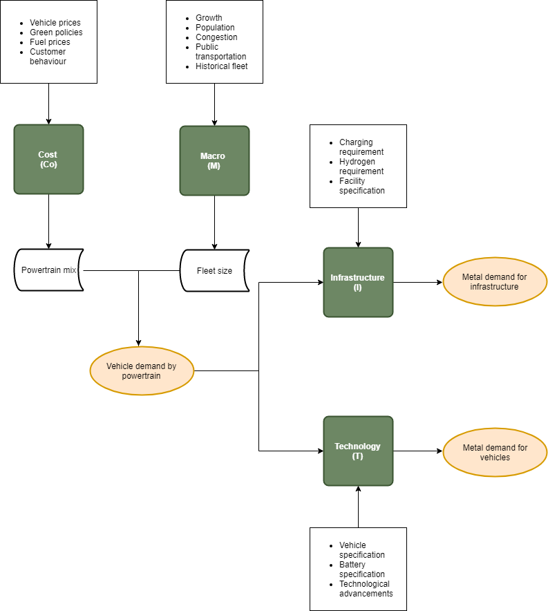
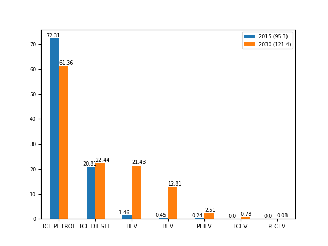
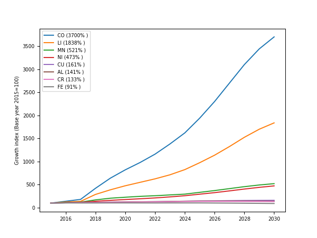

Electric Vehicles and Mined Commodities
Policy incentives, rising incomes, and technological advancements are anticipated to drive mass adoption of electric vehicles. This is a good news for the climate but poses a number of resource questions. We introduced a Python-based model named CoMIT (Cost, Macro, Infrastructure, Technology) to holistically simulate the impact of e-mobility on demand for mined commodities.

Our model forecasts large increases in demand for certain base metals, including a 37 and 18 fold increase in demand for cobalt and lithium (relative to 2015 levels), respectivelly. We also anticipate significant increase in demand for manganese, nickel, copper, chrome and aluminium.
| Forecasted new vehicle sales by powertrain | Forecasted metal demand for new vehicles |
|---|---|
|  |  |